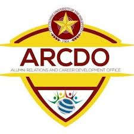

We are the driving force behind the PUP Career Development and Placement Office, dedicated to connecting students and graduates with meaningful employment opportunities. Our mission is to cultivate globally competitive professionals who embody excellence, integrity, and a commitment to making a positive impact in their fields and communities.